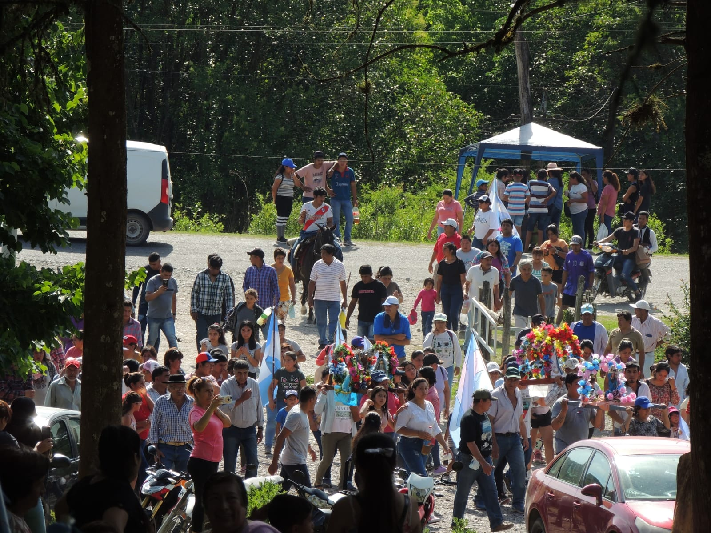
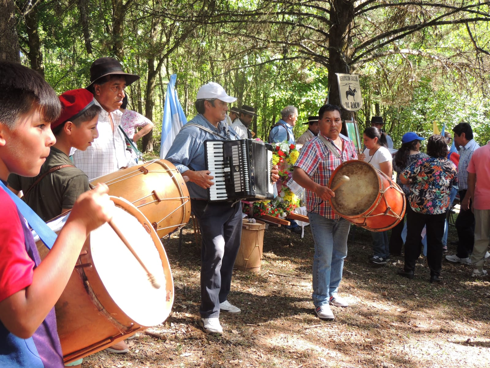
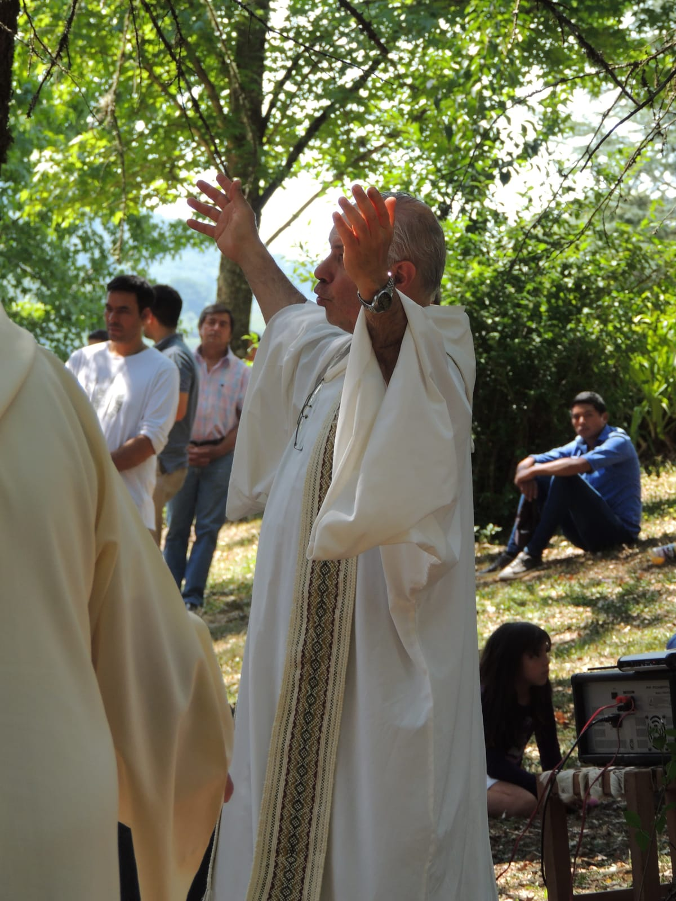
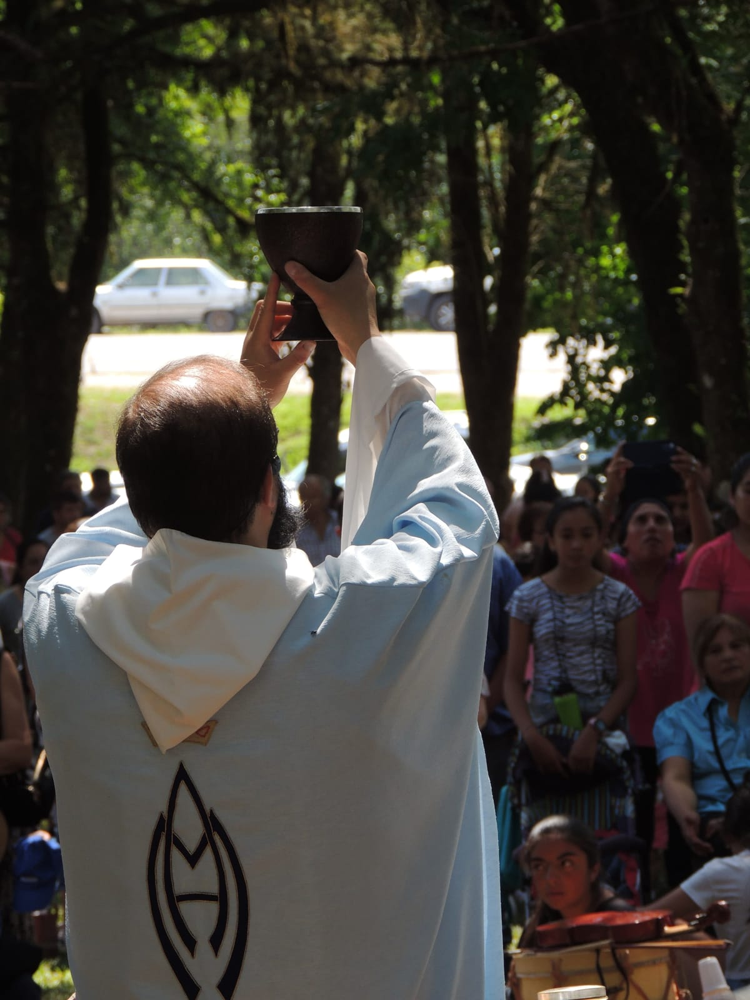
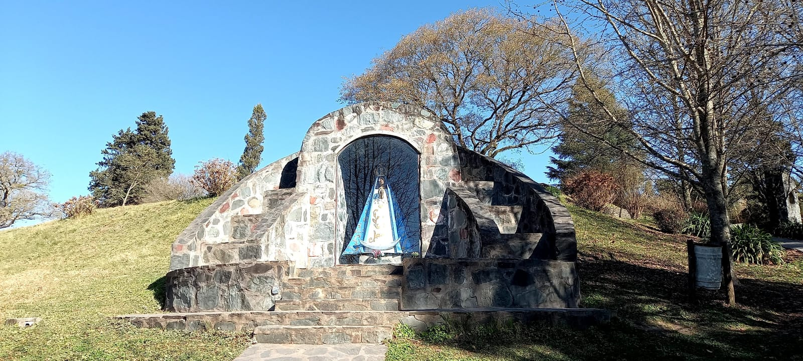

También hay hermanos en la fe que se convierten en peregrinos, pero que como dice el P. Luigi María Epicoco, en Sal, no miel:
“Hay un viaje que ocurre fuera y un viaje que ocurre dentro de nosotros (…)
¿Por qué se dirigen a un santuario (monasterio)? (…)
¿Cuál es el objetivo de una peregrinación?
A veces tenemos que hacer externamente lo que necesitamos hacer íntimamente.
Es decir, todo lo que hacemos externamente se convierte en símbolo de un viaje interior.
El exterior nos ayuda a hacerlo en el interior.
¿Para qué sirve el camino de una peregrinación?
No se trata simplemente de recorrer un camino, sino de convertirse.
El camino se convierte así en la vía a través de la cual puedo volver a mi interior,
porque el camino es cansancio pero también acogida,
es subida pero también bajada,
es doler un pie pero también alivio,
es hambre pero también alimento.
Todas las experiencias que tenemos externamente en un viaje, en una peregrinación,
tienen una consecuencia interna (…)
No se puede detener la vida espiritual.
Nunca hay un punto en el que alcancemos un centro de gravedad permanente” (p. 41).
Son los que hacen una experiencia interior, viven una relación y dicen:
“El amor nos hace sentir que pertenecemos a alguien.”
Vivimos la mayor parte del tiempo en la precariedad de sentirnos constantemente
carentes, huérfanos, errantes.
La caridad nos hace peregrinos, ya no vagabundos,
porque Dios nos da una pertenencia:
“Tú eres mío.” (p. 87)




